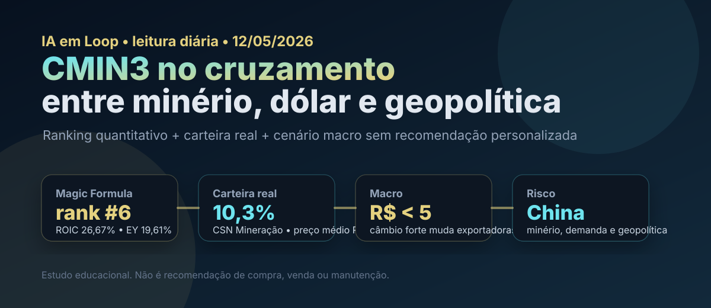

12/05: IA, dólar abaixo de R$ 5 e CMIN3 no radar
A leitura de hoje junta três forças que mexem com a carteira: regulação e adoção de IA, real mais forte, tensão geopolítica e commodities. No estudo da vez, CMIN3 entra como caso prático: aparece no ranking Magic Formula, está na carteira real e depende de minério, China, câmbio e disciplina de capital.

Leitura visual: CMIN3 combina posição quantitativa forte, exposição real na carteira e sensibilidade a minério, China e câmbio.
O sinal do dia
As manchetes monitoradas mostram um mercado que parece calmo em um ponto e tenso em outro. De um lado, o debate sobre dólar abaixo de R$ 5 ganhou força; de outro, bolsas e petróleo seguem reagindo à tensão no Oriente Médio. Para empresas exportadoras, essa combinação importa porque câmbio, commodity e percepção de risco global entram direto na tese.
Na camada de IA, o Brasil segue discutindo regulação, uso em educação, tribunais, eleições e conteúdo. O investidor pessoa física não precisa transformar isso em aposta temática imediata. A utilidade prática é outra: usar IA como ferramenta de triagem, comparação e disciplina, sem terceirizar a decisão de risco.
Leitura IA em Loop: quando o noticiário mistura IA, câmbio, guerra, inflação e balanços, o ranking quantitativo funciona como trilho. Ele não elimina incerteza; ele impede que a carteira seja montada só por narrativa.
Por que CMIN3 hoje?
CMIN3 foi escolhida porque aparece no radar quantitativo da Magic Formula e conversa diretamente com o tema do dia: minério, câmbio, China e disciplina de capital. No filtro acompanhado pelo IA em Loop, a empresa se destaca por retorno operacional e relação lucro/preço atrativos. Esses sinais colocam CMIN3 no radar, mas não substituem leitura de balanço, preço e risco setorial.
| Item | Leitura | Implicação |
|---|---|---|
| Ranking | Destaque na Magic Formula | Passa no filtro inicial de qualidade/preço |
| ROIC | Forte no filtro quantitativo | Retorno operacional relevante para mineração |
| Earnings yield | Atrativo no dado analisado | Preço parece descontado versus lucro usado no filtro |
| Carteira | Exposição a commodities exige controle | Posição setorial não pode virar concentração inconsciente |
O ponto central: o ranking coloca CMIN3 no radar, mas mineração exige humildade. Resultado bom pode virar armadilha se o minério cair, se a China desacelerar ou se o câmbio reduzir receita em reais.
Tese, pontos positivos e riscos
Tese
Empresa de mineração com retorno operacional elevado no ranking, potencial de dividendos e exposição a uma commodity global que conversa com China, infraestrutura e ciclo industrial.
Pontos positivos
ROIC alto, earnings yield relevante, presença em carteira com peso controlado e possível assimetria se minério e demanda asiática sustentarem preços.
Riscos
Commodity cíclica, dependência de China, real forte reduzindo receita em reais, custo logístico, risco ambiental/regulatório e volatilidade de dividendos.
Contexto de hoje
Manchetes de mercado destacaram câmbio abaixo de R$ 5, tensão no Oriente Médio e semana decisiva para CMIN3 com resultado do 1T26 no radar.
Compra, venda ou espera?
Pelos critérios do IA em Loop, CMIN3 hoje parece mais próxima de espera com viés de compra em recuos. O motivo é simples: o dado quantitativo é bom, mas o cenário não permite euforia. A empresa passa bem no filtro de ROIC e lucro/preço, porém depende de variáveis que o investidor não controla: minério, China, câmbio e apetite global por risco.
- Gatilho de compra: preço oferecendo margem de segurança maior, resultado confirmando lucro recorrente, minério resiliente e dividendos sustentáveis.
- Gatilho de espera: câmbio forte, incerteza sobre China ou alta recente sem melhora equivalente no fundamento.
- Gatilho de venda/redução: deterioração de ROIC, queda persistente do minério, piora de dívida/custos ou tese dependente só de dividendos passados.
Como isso conversa com IA e crise global
IA pode aumentar produtividade, mas também aumenta a velocidade com que narrativas entram no preço dos ativos. Em cenário de guerras, sanções, disputa tecnológica e volatilidade de energia, empresas ligadas a commodities podem servir como proteção parcial, desde que a posição não vire concentração inconsciente.
Para o investidor pessoa física, a lição prática não é “comprar mineração porque está barato”. É montar um processo: ranking para encontrar candidatos, balanço para confirmar qualidade, preço para exigir margem de segurança e carteira para limitar dano se a tese falhar.
Checklist antes de aumentar posição
- Comparar CMIN3 com VALE3 e outras mineradoras antes de aumentar exposição setorial.
- Verificar se o lucro usado no earnings yield é recorrente e se não depende de evento não repetível.
- Acompanhar resultado do 1T26, guidance, dividendos e comentários sobre demanda chinesa.
- Medir a exposição total da carteira a commodities: CMIN3, VALE3, PETR4, RECV3 e BRAV3 já somam uma fatia relevante.
- Exigir desconto maior quando câmbio e minério caminharem contra a tese.